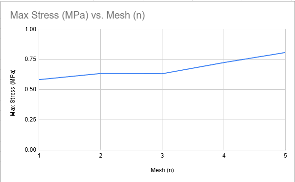
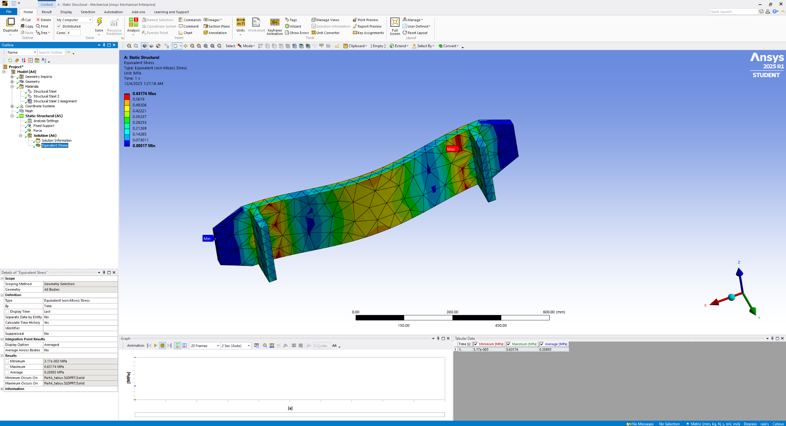
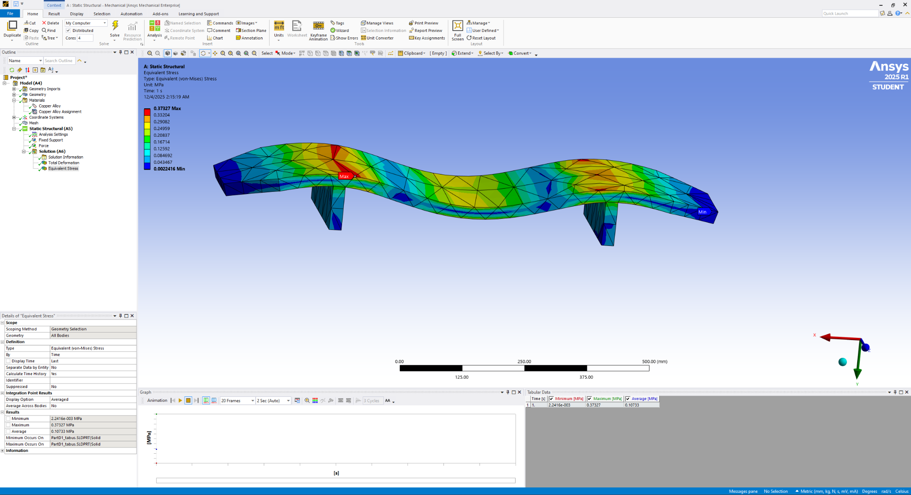

Structural analysis case study
Skateboard Deck Structural Analysis
An individual SolidWorks and ANSYS project investigating mesh sensitivity, support spacing, material selection, stress, and deformation to identify a stronger final configuration.

Overview
Problem and objective
The project evaluated how mesh density, support spacing, and material choice affected the deck’s equivalent stress and total deformation. I created the geometry, set up the simulation studies, maintained consistent loading and boundary conditions, interpreted the results, and documented the final recommendation.
Process
Study structure
- Created the skateboard deck and support geometry in SolidWorks.
- Imported the geometry into ANSYS Static Structural.
- Ran a five-level mesh-refinement study and recorded maximum von Mises stress.
- Compared three support distances: 40 mm, 125 mm, and 200 mm.
- Compared aluminum, copper, and magnesium alloys under consistent conditions.
- Tested two refined designs at 110 mm and 140 mm support spacing.


Results
Key findings
The intermediate support range distributed the load more effectively than the wider or narrower alternatives. The 110 mm copper-alloy configuration produced slightly lower stress and substantially lower deformation than the 140 mm comparison design.
| Design | Support spacing | Material | Max stress | Max deformation |
|---|---|---|---|---|
| D1 | 110 mm | Copper alloy | 0.37327 MPa | 0.0037993 mm |
| D2 | 140 mm | Copper alloy | 0.37826 MPa | 0.0064602 mm |

Challenges and iterations
What changed during the project
A geometry issue required reimporting the model and rebuilding part of the ANSYS setup. Coarser meshes also produced inconsistent values, so I checked the refinement trend and carefully kept loads, materials, and boundary conditions consistent across studies. The final 110 mm and 140 mm values were selected after reviewing the earlier support-spacing trend.
Future work
How I would improve it
- Evaluate increased deck thickness, curvature, or reinforcement ribs.
- Compare composite materials such as fiberglass or carbon fiber.
- Run fatigue and dynamic analyses for repeated riding loads.
- Validate the simulation with a physical prototype and deflection testing.